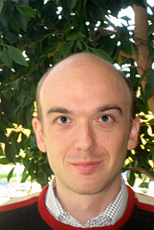
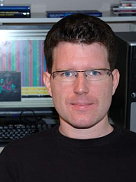

ECCB'12 KEYNOTES:
Søren Brunak
Technical University of Denmark
Aaron Ciechanover
Technion - Israel Institute of Technology
Barry Honig
Columbia University, New York
Laurent Keller
University of Lausanne
Gene Myers
MPI of Molecular Cell Biology and Genetics, Dresden
Mihaela Zavolan
Biozentrum University of Basel & SIB
CONFERENCE CHAIRS:
Torsten Schwede (chair)
Dagmar Iber (co-chair)
ECCB'12 is organized by:


Tutorial 2: Protein evolution
Protein Evolution: From Sequence to Structure to Function
Christine Orengo, UCL, London, UK
Romain Studer, UCL, London, UK
Nicholas Furnham, EMBL-EBI, Cambridge, UK
| Date: | Sunday, 9 September, 2012 |
| Time: | 9:00 - 17:00 |
| Registration: | Congress Center Basel, Messeplatz 21 |
| Venue: | Room "Geneva 3", Hotel Ramada, Messeplatz 12 |
Motivation
Proteins are major components of organisms and as such are subject to natural selection, which promotes novel adaptive features or removes deleterious mutations. These adaptations, which can be to both internal and external environments, range from single-point amino acid substitutions to quite large insertions and deletions of residues and can sometimes result in the additions of significant structural embellishments to the evolutionary conserved cores of structural domains.
Recent studies have presented many interesting novel views on protein evolution (ie Tóth-Petróczy PNAS 2011, Chakrabarti PloS One 2010, Dessailly Structure 2010) and have described various tools to estimate and understand the evolutionary forces that act on proteins. When functional divergence has occurred, positive selection can be detected at the nucleotide level. These adaptations can occur at single positions or in clusters of sites, in a co-evolutionary manner. For example, it has been observed that amino acids in the core of the protein tend to evolve if the surface evolves too, as if they are connected. At a higher lever, a large number of variations are observed between remote homologs in some superfamilies. Whilst, substrate specificity can be diverse across a superfamily, the reaction chemistry is more often maintained. In many enzyme superfamilies, the position of catalytic residues may vary despite performing equivalent functional roles in related proteins. The implications of functional diversity within superfamilies is a focus for some of the structural genomics projects will be discussed in this workshop.
Understanding the mechanisms that drive protein evolution can help in understanding how the genomes are shaped by natural selection and more practically, can help in predicting the effect of mutations on proteins targeted by drugs.
Overall Goals
This tutorial will present recent concepts regarding the evolution and adaptation of protein sequences and protein structures. It will be divided into three sections, in which we will present methods relating to different levels of protein evolution. Each section will have an introduction explaining the concepts underlying any analysis methods, and a discussion of the power and limitations of different methods and tools used to explore these concepts and which participants will learn how to use during the practical for that section.
Prerequisites and intended audience
Intended audience: Evolutionary biologists, biochemists, computational biologists, structural biologists.
Possible prerequisites: Unix command line, R (for some statistical tests).
Level: Introductory
Tutorial Outline
| Time | Session Details | |
| 9:00 |
Introduction: Detection of evolutionary shifts in protein sequences
References: Large-scale analysis of orthologs and paralogs under covarion-like and constant-but-different models of amino acid evolution. Studer RA, Robinson-Rechavi M. Mol Biol Evol. 2010 Nov;27(11):2618-27.
Pervasive positive selection on duplicated and nonduplicated vertebrate protein coding genes. Studer RA, Penel S, Duret L, Robinson-Rechavi M. Genome Res. 2008 Sep;18(9):1393-402. |
|
| 9:45 | Practical: Detection of evolutionary shifts in protein sequences (Romain Studer – UCL) The participants will have the opportunity to apply various methods on different dataset of protein sequences (provided by the organisers or by the participants themselves). They will start from raw sequences, learning to build alignments and phylogenetic trees and finally analysing these protein families with some of the methods presented in the introduction, such as CodeML (Null model, Site-model, Branch-model, Branch-site model), BADASP (detect shift in evolutionary rate and shift in biochemical properties), or FunDi (detect sites under functional divergence). |
|
| 10:30 | Coffee break | |
| 11:00 | Practical: Detection of evolutionary shifts in protein sequences Practical continues. |
|
| 12:30 | Lunch | |
| 13:30 |
Afternoon session: Evolution of functions in domain structure superfamilies
CATH is database of domain superfamilies initially identified using structural data and then expanded with predicted domain structures in genome sequences. Structural similarities are identified using the CATHEDRAL algorithm (Redfern, Orengo, 2007) and homologous relationships are then confirmed using sequence based HMM-HMM approaches (eg HHpred, Hildebrand 2009). CATH is a widely used resource (currently more than 10,000 unique visitors per month and >2,000 citations) containing 110,000 domain structures and nearly 16 million domain sequences classified into 2,600 domain superfamilies.
Recently, each domain superfamily has been sub-classified into functional families (funfams) using an iterative profile-profile based approach (Rentzsch, Lee, Orengo, 2010). Functional families are annotated with information from GO, EC and other functional resources and are being used to explore the evolution of function in domain superfamilies, highlighting structural changes and shifts in conserved residues which, for example, mediate changes in chemistry or substrate specificity in different functional families. CATH also provides information on the protein interactions and associations in which the domains participate and displays functional networks.
Recent analyses (Dessailly, Orengo, 2010) of a very highly populated CATH domain superfamily, the HUP superfamily, have shown the mechanisms by which structural changes, occurring during evolution modify, the actives sites of enzyme relatives to change chemistry and specificity and alter the surface features of relatives promoting diverse protein interactions and oligmerisations which can also affect function.
References: Gene3D: a domain-based resource for comparative genomics, functional annotation and protein network analysis. Lees J, Yeats C, Perkins J, Sillitoe I, Rentzsch R, Dessailly BH, Orengo C. Nucleic Acids Res. 2012 Jan;40(Database issue):D465-71.
Extending CATH: increasing coverage of the protein structure universe and linking structure with function. Cuff AL, Sillitoe I, Lewis T, Clegg AB, Rentzsch R, Furnham N, Pellegrini-Calace M, Jones D, Thornton J, Orengo CA. Nucleic Acids Res. 2011 Jan;39(Database issue):D420-6.
|
|
| 14:15 |
Practical: Exploring structural evolution and its impact on function in CATH superfamiles (Christine Orengo – UCL)
|
|
| 15:00 | Coffee break |
|
| 15:30 |
Introduction: Exploring the functional evolution of structurally defined enzyme superfamilies. Nicholas Furnham (EMBL-EBI)
References:
Exploring the evolution of novel enzyme functions within structurally defined protein superfamilies. Furnham N, Sillitoe I, Holliday GL, Cuff AL, Laskowski RA, Orengo CA, Thornton JM. PLoS Comput Biol. 2012 Mar;8(3):e1002403.
FunTree: a resource for exploring the functional evolution of structurally defined enzyme superfamilies. Furnham N, Sillitoe I, Holliday GL, Cuff AL, Rahman SA, Laskowski RA, Orengo CA, Thornton JM. Nucleic Acids Res. 2012 Jan;40(Database issue):D776-82.
|
|
| 16h15 |
Practical: Exploring the functional evolution of structurally defined enzyme superfamilies. Nicholas Furnham (EMBL-EBI)
|
|
| 17:00 | End of Workshop |
Tutors
|
Christine OrengoChristine Orengo is a Professor of Bioinformatics in the Structural and Molecular Biology Department at University College, London. After completing a PhD in the mathematical modelling of enzyme reactions, her research interests focused on the development of algorithms for classifying protein structures and sequences into evolutionary families and for predicting protein structures and functions. Together with Professor Janet Thornton she established the CATH domain structure database in 1994. This was later expanded, in 2002, to include predicted domain structures in completed genomes and now also provides information on protein interactions/associations and functional networks. She has presented CATH at many international conferences and has considerable experience in teaching bioinformatics algorithms at UCL and in demonstrating CATH at workshops and tutorials, including presentations at EMBO workshops on protein structure (at the EBI, UK) and comparative genomics (Brazil). She has also given workshops in the EU funded Biosapiens network for structural and functional annotation of genomes and the Bologna workshop on protein structures and functions. She is on the Board of Directors for the International Society for Computational Biology (ISCB) and is a member of the Scientific Advisory Board of the Swiss Institute of Bioinformatics (SIB). She has edited a textbook on Bioinformatics and contributed many chapters on protein structure classifications to books on protein evolution and structural bioinformatics. |
|
Nicholas FurnhamNicholas Furnham is a post-doctoral research scientist in the laboratory of Prof. Janet Thornton at the European Bioinformatics Institute developing a new resource for understanding the evolution of novel enzyme functions in structure based protein superfamilies (FunTree). This has involved bringing together large and diverse sets of data, as well as developing novel tools and algorithms to analyze and present the information. He obtained his PhD in computational biology under the supervision of Prof. Sir Tom Blundell at the University of Cambridge, where he developed novel methods for performing protein structure prediction based and methods for solving structures from crystallographic experimental data, especially at low resolution. These components formed part of the RAPPER software package, which he integrated into the CCP4 software suite used by many thousands of researches in academic and industrial laboratories worldwide He has been invited to give a number of talks at international conferences, national meetings and to industry groups. He has also been invited to teach on a number of graduate and post-graduate courses including a international PhD workshop in protein crystallography at the University of Copenhagen, the Canadian Light Source Summer School in Saskatoon, Wellcome Trust Advance courses in proteomics bioinformatics, as well as EMBO and EMBRACE courses in protein structure and function.
|
Romain StuderRomain Studer is a senior post-doc research scientist in the laboratory of Prof. Christine Orengo. He obtained is PhD in the laboratory of Prof. Marc Robinson-Rechavi (Lausanne, Switzerland). His PhD work in evolutionary bioinformatics focused on protein evolution in the context of whole-genome duplication. He specialised in various methods to identify adaptation at genetic levels, such as CodeML/PAML. Using CodeML and other software, he studied the prevalence of positive selection in Vertebrates and the characteristics of shifts in evolutionary rate in Animals proteins. While he detected positive selection in many vertebrate genes, he found no difference between orthologous and paralogous genes. Based on the CodeML pipeline he built for his own research, he participated in the development of the web resource Selectome, a database of positive selection, which is currently supported by the HP2C initiative. During his PhD, he participated in two studies revealing the relationship between structure and evolution, both in a nuclear receptor in insects and in an MHC family in birds. Romain was assistant-lecturer for bioinformatics practicals (B.Sc/M.Sc levels) at University of Lausanne, as well as involved in the EMBnet course of phylogeny. He now continues to work on the topic of protein evolution in Vertebrates with respect to the 3D structures. |